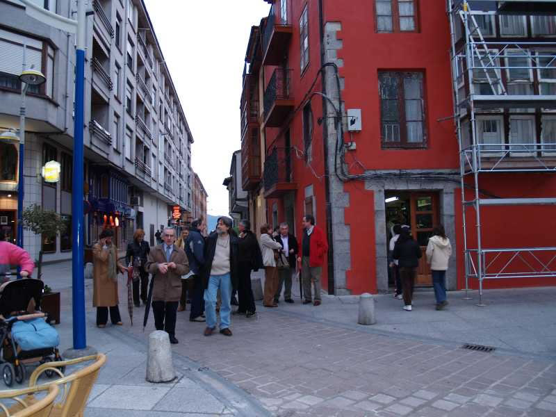

Encuentro en SantoñaAunque estaba todo para repetir nuevamente, decidimos por amplia minoría que debíamos dar de comer también a otros taberneros de los muchos, abundantes y buenos que tiene Santoña, así que dejamos el bar de Alberto, (es el bajo de esquina del edificio rojo) y nos dispusimos a buscar, con la urgencia que requiere este tipo de cosas, otro bar.... |
|
 |